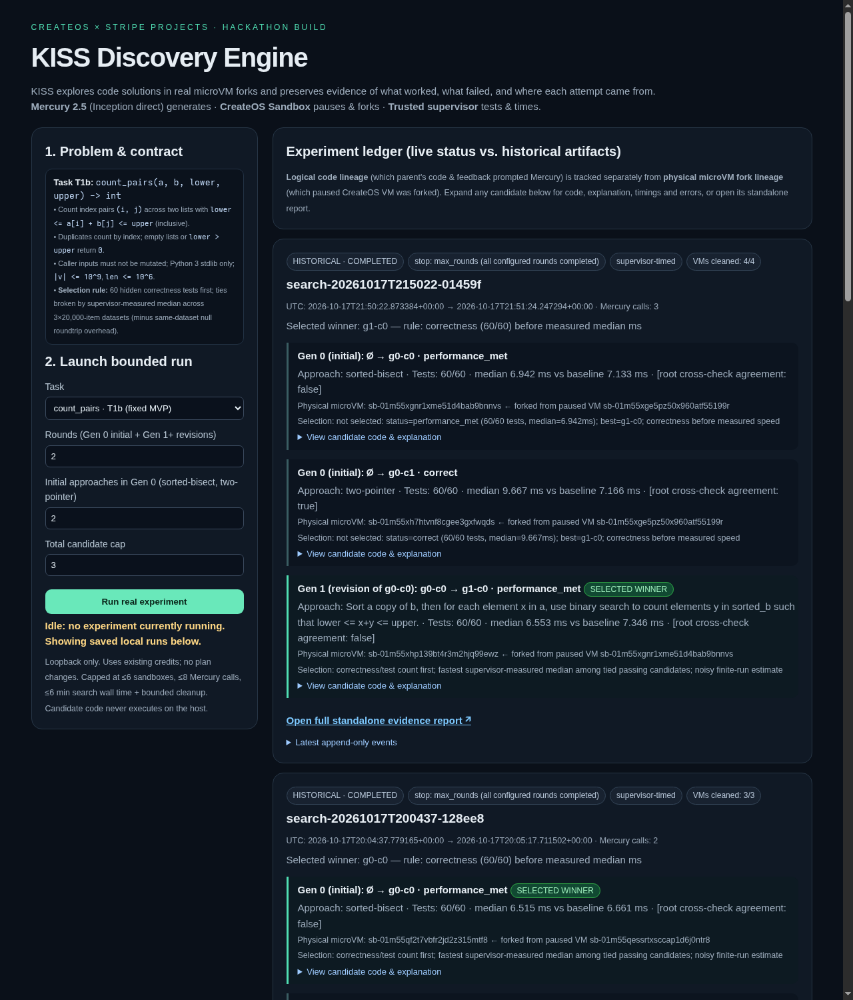
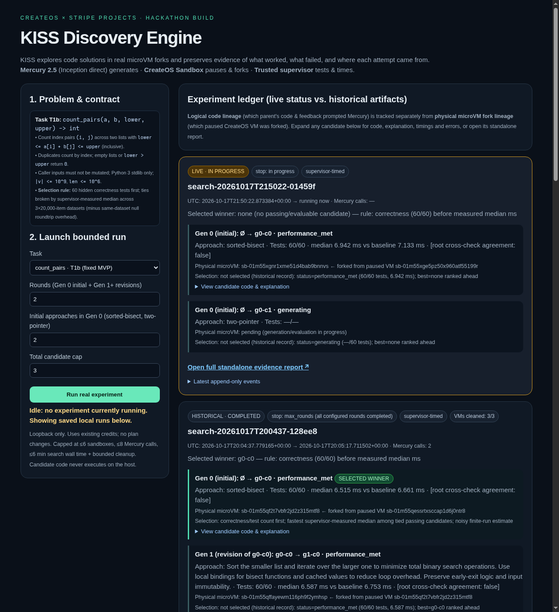
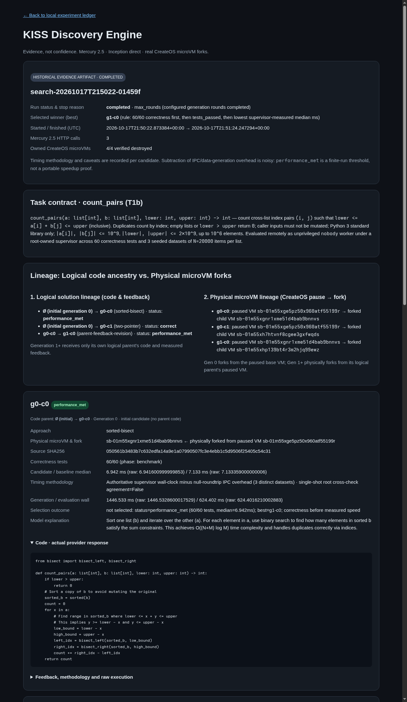

CreateOS × Stripe Projects · Static Evidence Ledger (No JavaScript)
An agent that writes code, runs every attempt in a real CreateOS microVM fork, and lets a trusted supervisor's tests decide.
Generated from immutable summary.json artifacts via render_report(summary, static=True). Ratios compare supervisor-measured candidate median against the same-VM trusted reference baseline (NOISE_BAND = 0.05).
| Run ID | Chain & Lineage | Candidate Verdicts | Cleanup |
|---|---|---|---|
| search-20261017T215022-01459f Primary 2-approach + revision demo |
Paused base sb-01m55xge5pz50x960atf55199r → Gen 0 forks g0-c0 & g0-c1 → g0-c0 paused → Gen 1 physical fork g1-c0 |
• g0-c0 (sorted-bisect, 60/60): 0.97× baseline · parity within measurement noise (6.942 / 7.133 ms)• g0-c1 (two-pointer, 60/60): 1.35× baseline · slower (9.667 / 7.166 ms)• g1-c0 (parent-feedback-revision, 60/60): 0.89× baseline · parity within measurement noise (6.553 / 7.346 ms, agreement: false; selected by rule)
|
4/4 destroyed |
| search-20261017T200437-128ee8 Contrast 1-width chain (parent stays ahead) |
Paused base sb-01m55qessrtxsccap1d6j0ntr8 → g0-c0 → physical fork g1-c0 |
• g0-c0 (sorted-bisect, 60/60): 0.98× baseline · parity within measurement noise (6.515 / 6.661 ms; kept as best)• g1-c0 (parent-feedback-revision, 60/60): 0.98× baseline · parity within measurement noise (6.587 / 6.753 ms; slower in raw ms, not selected)
|
3/3 destroyed |
| Artifact | Command | Verified Evidence | Cleanup |
|---|---|---|---|
smoke-20261017T200218-804c8e/summary.json |
uv run kiss smoke |
inheritance_verified: true, independence_verified: true, 2 children running concurrently while base paused, egress pypi.org: 200 / example.com: URLError |
3/3 destroyed |
fixtures-20261017T195514-b9747e/summary.json |
uv run kiss failures |
5/5 remote failure fixtures (not Mercury) classified as expected: incorrect → test_failure, controlled-timeout → timeout, syntax-error → compilation_error, input-mutation → test_failure, timing-spoof (time.perf_counter) → protocol_error |
6/6 destroyed |
audit-20261017T215138-6151e4/summary.json |
uv run kiss audit |
Read-only reconciliation across all recorded runs: 34/34 owned CreateOS sandboxes verified destroyed (unresolved: []); 20,350 provider-reported tokens across 16 Mercury 2.5 calls |
34/34 destroyed |
See evidence/README.md for provenance details.

dashboard-completed.png — Experiment ledger with completed chains.
dashboard-live-running.png — Live in-progress state during search-20261017T215022-01459f.
report-search-20261017T215022-01459f.png — Standalone evidence report.